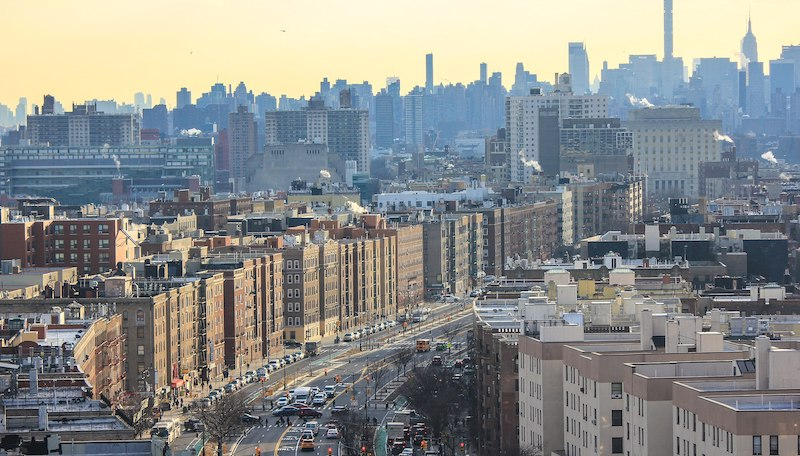
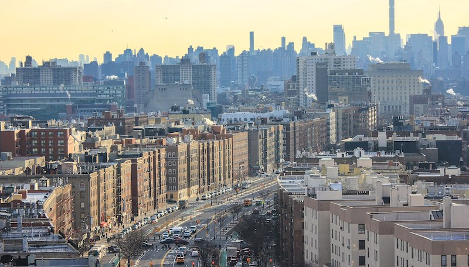

Welcome to the Bronx
 

The Bronx is the northernmost of the five boroughs of New York City. Coextensive with Bronx County, it was the last of the 62 counties of New York State to be incorporated. Located north of Manhattan and Queens, and south of Westchester County, the Bronx is the only borough that is located primarily on the mainland (a very small portion of Manhattan, the Marble Hill neighborhood, is physically located on the mainland, because of the rerouting of the Harlem River in 1897). The Bronx's population is 1,385,108 according to the 2010 United States Census. The borough has a land area of 42 square miles (109 km2), making it the fourth-largest in land area of the five boroughs, the fourth most populated, and the third-highest in population density.
The Bronx is divided by the Bronx River into a hillier section in the west, closer to Manhattan, and the flatter eastern section, closer to Long Island. Technically, the West Bronx is divided from the East Bronx by Jerome Avenue—the continuation of Manhattan's Fifth Avenue—making the West Bronx roughly one-eighth the size of the East Bronx. The West Bronx was annexed to New York City (then largely confined to Manhattan) in 1874, and the areas east of the Bronx River were annexed in 1895. The Bronx first assumed a distinct legal identity when it became a borough of Greater New York in 1898. Bronx County, with the same boundaries as the borough, was separated from New York County (afterwards coextensive with the Borough of Manhattan) as of January 1, 1914.
Although the Bronx is the third most densely populated county in the U.S., about a quarter of its area is open space, including Woodlawn Cemetery, Van Cortland Park, Pelham Bay Park, the New York Botanical Garden and the Bronx Zoo in the borough's north and center, on land deliberately reserved in the late 19th century as urban development progressed northwards and eastwards from Manhattan with the building of roads, bridges and railways.
The Bronx River was named after Jonas Bronck, who created the first settlement as part of the New Netherland colony in 1639, and eventually lent its name to the entire borough. The native Lenape were progressively displaced after 1643 by settlers. The Bronx received many Irish, German, Jewish and Italian immigrants as its once-rural population exploded between the mid-19th and mid-20th centuries. They were succeeded after 1945 by African Americans and Hispanic Americans from the Caribbean basin — especially Puerto Rico and later the Dominican Republic, Jamaica and Albania. In recent years, this cultural mix has made the Bronx a wellspring of both Latin music and hip hop.
The Bronx contains one of the five poorest Congressional Districts in the U.S., the 16th, but its wide variety of neighborhoods also includes the affluent and middle to upper income Riverdale, Schuylerville and Country Club. The Bronx, particularly the South Bronx, saw a sharp decline in population, livable housing, and the quality of life in the late 1960s and the 1970s, culminating in a wave of arson. Since then the communities have shown significant redevelopment starting in the late 1980s before picking up pace in the 1990s into today.